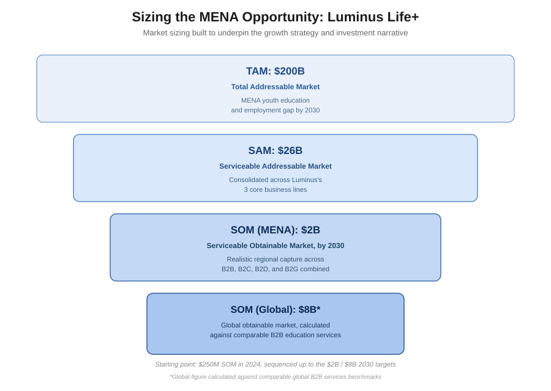
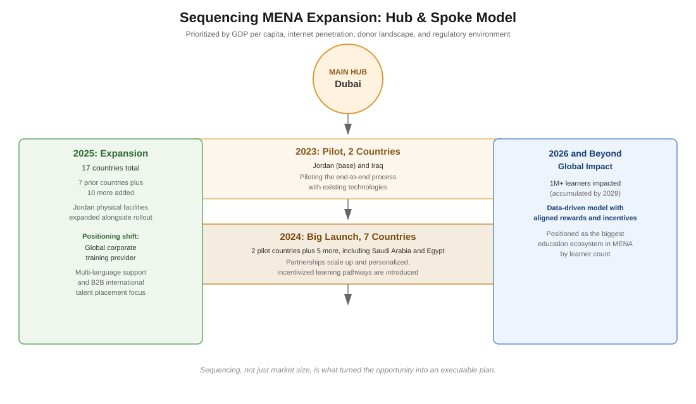

Luminus had been building real education outcomes in Jordan for over 20 years, $120M in revenue, real employment numbers behind it. Luminus Life+ was the attempt to take that success across the MENA region, a market facing a genuine $200B talent gap by 2030. The ambition was there. What wasn't there yet was a strategy investors outside Jordan could actually trust.
Scaling a proven, single country business into a multi country ecosystem isn't just a bigger version of the same plan. It needed a growth story credible enough to convince investors who'd never operated in these markets that the math actually worked, not just that the mission was good.
I started with the market sizing, since nothing else means anything without it. I built out a $200B total opportunity, narrowed to a realistic $26B serviceable market, and a $2B obtainable target in MENA by 2030, growing to $8B globally when measured against comparable education businesses. From there I worked out the actual sequence, a hub and spoke model based in Dubai, moving from 2 pilot countries in 2023 to 7 in 2024 to 17 by 2025, choosing each country based on things like GDP per capita, internet access, and the regulatory environment. Deciding where to go first, and why, is what turned a big idea into something you could actually execute.
Working directly with the founder, I built the pitch and the investment narrative behind this strategy. He's the one who carried it into the room. Luminus Life+ came out of that with a $50M seed investment from Saudi Arabia's Public Investment Fund. The underlying model also projected revenue growing from $54M in 2023 to $429M by 2027, with EBITDA moving from a loss into $197M, giving investors a clear picture of what the money was expected to do.
This is what it looks like to take a business that already works in one country and make it investable across an entire region, the market sizing, the sequencing, and the actual financial case a raise depends on, not just a good story. Building something rigorous enough for a founder to carry into a room with a sovereign fund, and having it hold up, is the real work here. That combination is what got someone to say yes.